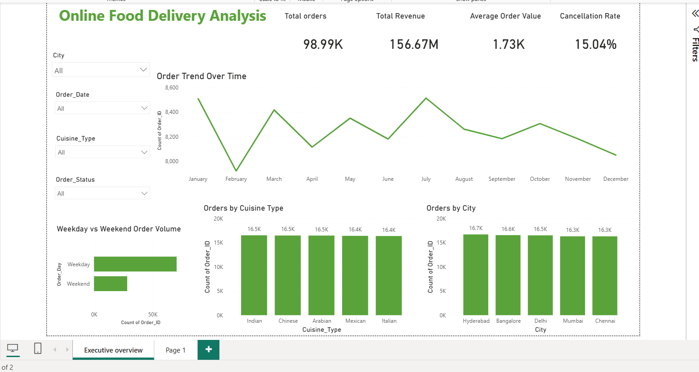
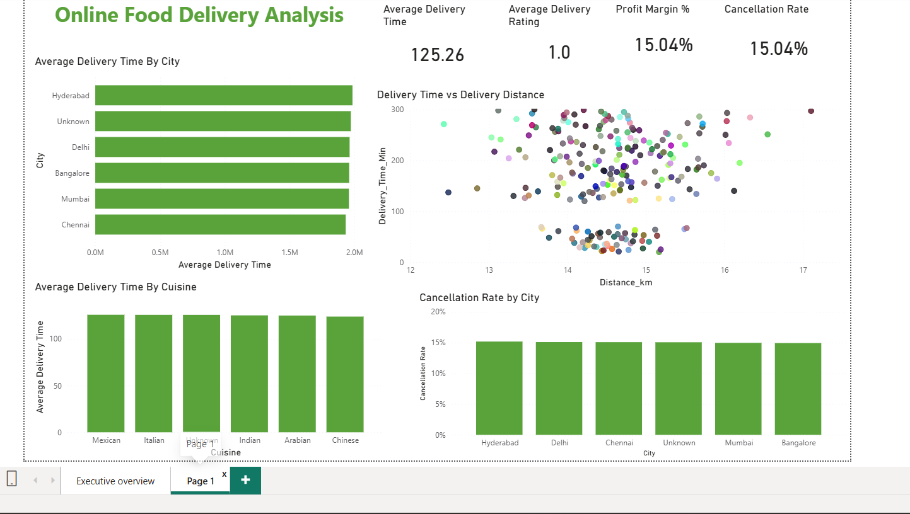

DATA ANALYSIS • BUSINESS INTELLIGENCE
Online Food
Delivery Analysis
An end-to-end food delivery analytics project that combines Python, SQL and Power BI to understand orders, revenue, delivery performance, cancellations and operational patterns.
01. Overview
This project analyzes an online food delivery dataset to understand customer orders, restaurant activity, delivery performance, cancellations and profitability.
The project follows an end-to-end analytics workflow starting from data loading and cleaning, followed by exploratory analysis, SQL analysis and Power BI dashboard development.
Transform raw food delivery data into meaningful business insights using Python, MySQL and Power BI.
02. Dataset Understanding
The raw dataset contains 100,000 records and 25 columns covering customer, restaurant, order, delivery, payment and profitability information.
100,000
Initial records
25
Dataset columns
98,986
Records after date cleaning
2024
Order data year
03. Data Categories
The dataset contains information across multiple business areas.
Customer
Customer age, gender and customer identifiers.
Restaurant
Restaurant, cuisine type, city and area.
Order
Order value, final amount, discounts and status.
Delivery
Delivery time, distance, ratings and delivery partner information.
Payment
Payment mode and transaction-related information.
Profitability
Profit margin associated with each order.
04. Data Cleaning
Missing values were handled according to the type and business meaning of each column.
Numerical Values
Median-based filling was used for numerical fields such as customer age, order value, delivery time and distance where applicable.
Categorical Values
Missing categorical values were represented using meaningful labels such as Unknown or No Rating.
Final Amount
Missing final amounts for applicable delivered orders were recalculated using order value and discount information.
Date Cleaning
Order dates were converted to datetime format and records with invalid or missing dates were removed.
05. Exploratory Data Analysis
Exploratory analysis was performed to understand order behaviour, revenue, delivery performance and cancellations.
Order Analysis
Examined delivered and cancelled orders to understand overall order behaviour.
Revenue Analysis
Analysed total revenue and average order value using the final order amount.
Delivery Analysis
Analysed delivery time, delivery distance and delivery performance across cities.
Cancellation Analysis
Compared cancellation rates across cities and examined major cancellation reasons.
06. Key Analytical Findings
Order Distribution
The cleaned dataset contains 98,986 orders, with delivered and cancelled orders analysed separately.
Delivery Performance
Average delivery time was approximately 127.48 minutes in the EDA dataset.
Cancellation Pattern
City-level cancellation rates were all around 15%, with only small differences between cities.
Cancellation Reasons
Late delivery, customer cancellation and restaurant issues were the recorded cancellation categories.
07. SQL Analysis
MySQL was used to store and analyse the cleaned food delivery data for structured business analysis.
Order Analysis
Analysed order counts and order status.
Revenue Analysis
Used order and final amount fields for revenue-related analysis.
City Analysis
Compared order and cancellation behaviour across cities.
Delivery Analysis
Analysed delivery time, distance and cancellation-related patterns.
08. Power BI Dashboard
The final analysis was transformed into an interactive Power BI dashboard to present business KPIs and operational insights visually.
Executive Overview
Provides an overview of orders, revenue, average order value, cancellation rate, order trends, cuisine performance and city-wise order volume.

Delivery & Operations Analysis
Focuses on delivery time, delivery distance, cuisine-wise delivery performance and city-wise cancellation rates.

09. Business Insights
The analysis provides several areas that can support operational and business decision-making.
Order Monitoring
Track order volume and order trends across different cities and cuisine categories.
Delivery Operations
Monitor delivery time and distance to understand delivery performance.
Cancellation Reduction
Cancellation reasons can help identify areas such as delayed delivery and restaurant-related issues that require attention.
Profitability
Profit margin analysis can be used alongside order and delivery metrics to understand operational performance.
10. End-to-End Workflow
11. Technologies
12. Project Links
Explore the project source code and interactive dashboard.